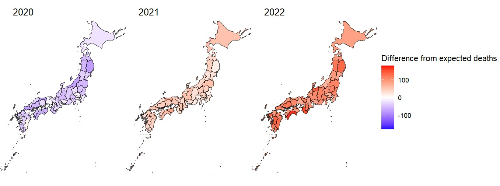

COVID Toll: Excess Deaths Japan Didn’t Count
Japan saw 135,000 excess deaths from 2020 to 2022—more than twice the 57,000 official COVID deaths—suggesting indirect losses linked to hospital strain and vulnerability among older people, based on government mortality data.
What We Found
- Excess deaths were about 135,000 over three years—more than double the 57,000 officially reported COVID deaths—showing a large, previously unknown toll from indirect and unrecorded cases.
- Adjusted for population, the highest death rates were in rural prefectures such as Kochi (on Shikoku island), Miyazaki (in southern Kyushu), and Toyama (on the Japan Sea coast), rather than in big cities like Tokyo or Osaka.
- In 2020, overall deaths initially fell below normal—helped by masks, distancing, and a collapse in influenza—but then rose sharply in 2021–22 as pressure on health systems built up and older people were hit hardest.
Why It Matters
Looking only at confirmed COVID deaths made the pandemic seem milder than it really was. Many deaths likely came from delayed care, crowded hospitals, and other knock-on effects among older and vulnerable people.
The analysis shows how aging rural regions—in Japan and elsewhere—can be hit hardest even when infection waves do not always appear dramatic in headline numbers.
Visual Highlight
Once adjusted for population, excess mortality was highest in rural prefectures—not major metropolitan areas.

Weekly Progression (Heatmap)
A week-by-week heatmap traces when and where deaths surged, revealing how the pattern shifted across prefectures over time.
How We Did It
- Used estimates from a Ministry-affiliated research team of how many people would normally die each week, based on past years of mortality data.
- Calculated “excess deaths” by comparing observed deaths with this expected number, using the middle of the estimate range to avoid overstating the impact.
- Mapped the results for all prefectures to compare death rates per person and see how patterns changed over time.
- Discussed the findings with the mortality research team to confirm the patterns were medically plausible and communicated with proper caution.
My Role
- Built the R workflow for data cleaning, excess-death calculation, and visualization.
- Coordinated expert review and turned statistical uncertainty into clear language for editors and readers.
- Worked with medical reporters who were covering rural hospitals to check that the data matched what doctors were seeing on the ground.
An example of translating statistical uncertainty into newsroom-ready findings.
Impact & Publication
- A front-page investigation in The Asahi Shimbun that revealed excess deaths beyond confirmed counts and helped shift debate toward rural vulnerability.
- Maps and heatmaps formed the core of the published story and led to an invitation to present the methods at a national R user group.
Links
-
"Japan recorded 135,000 excess deaths in three years"
Japanese article
The Asahi Shimbun, Page 1, May 2023 -
"Rural Japan suffered the highest excess deaths"
Japanese article
The Asahi Shimbun, Page 2, May 2023 - Full analysis & code (R)